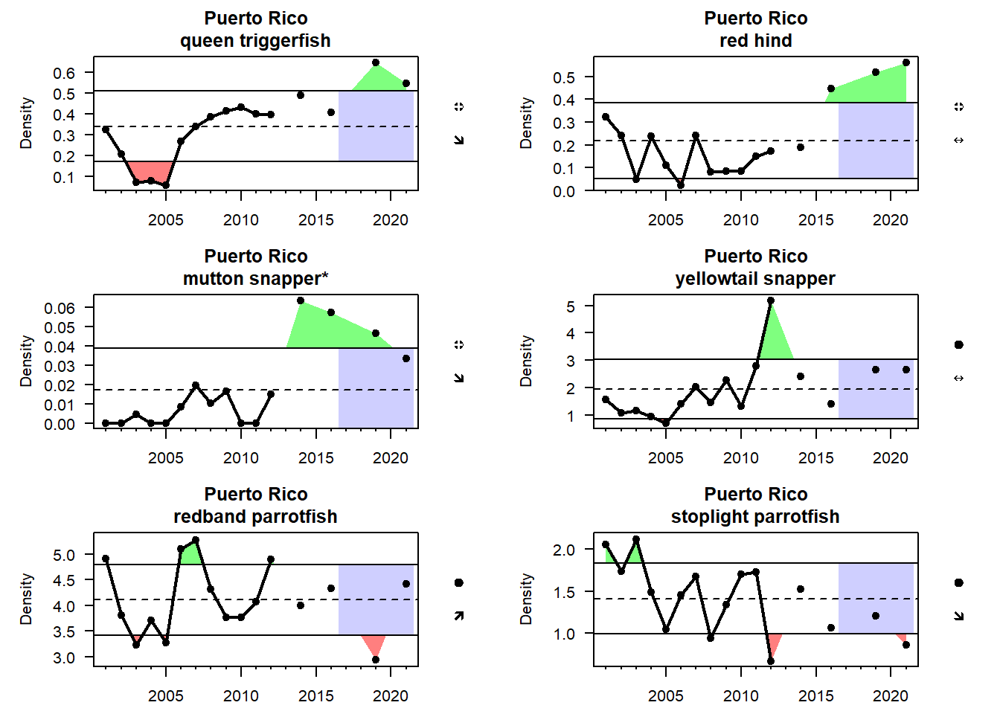
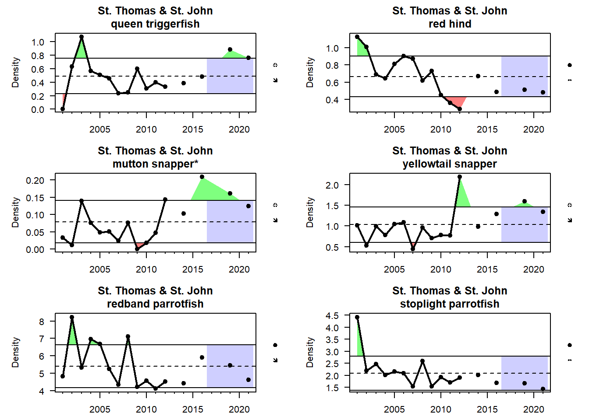
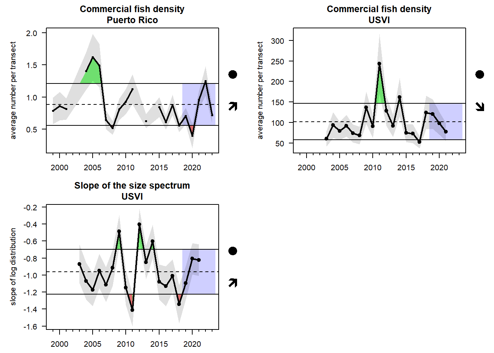
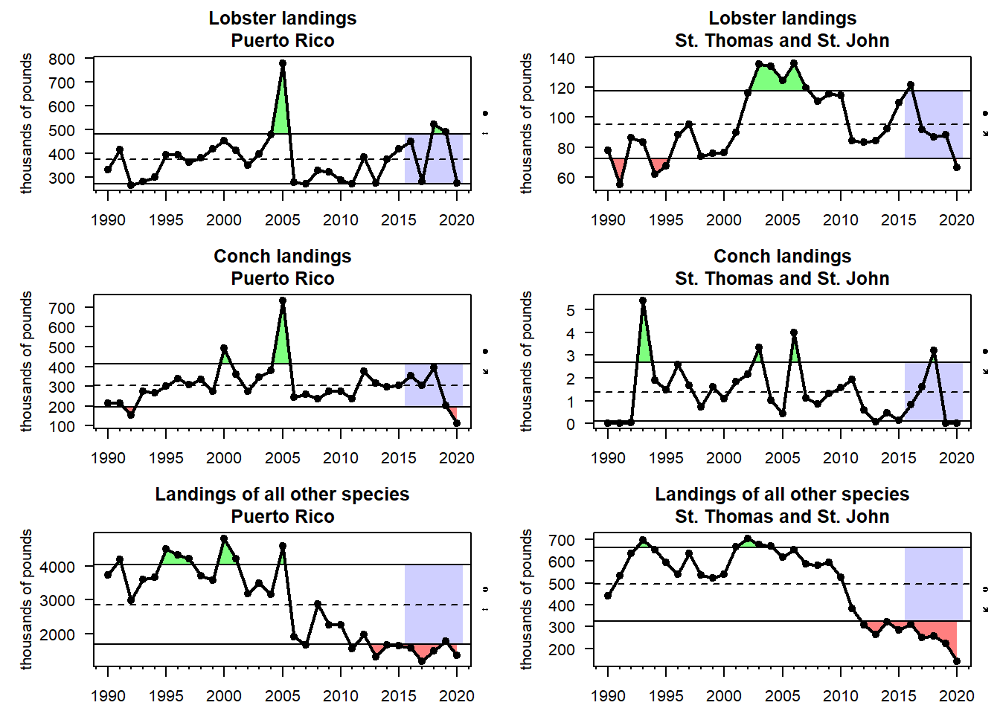
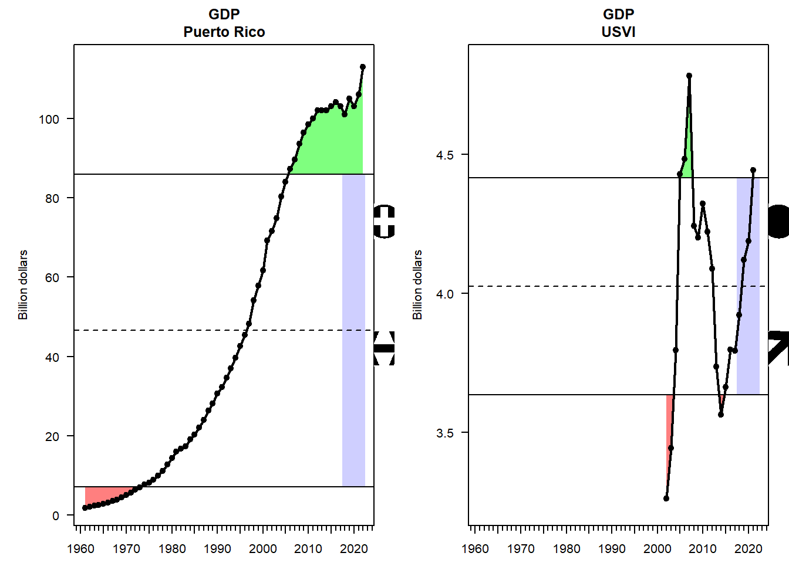
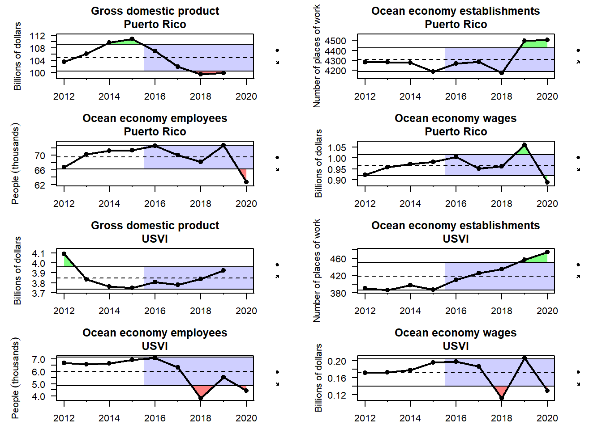

5. Tracking performance toward fishery management objectives
In this section, we examine indicators related to broad, ecosystem-level fishery management objectives.
5.1 Food production
Fishery independent surveys of economically important species
Indicator 16 - abundance of economically important fish


Indicator 16.1 - abundance of commercial fish based on TCRMP and PRCRMP Indicator 16.2 - slope of the size spectrum based on TCRMP and PRCRMP
Commercial landings
Indicator 17
#{r, message = FALSE, warnings = FALSE} #load("../indicator_objects/landings.RData") #plotIndicatorTimeSeries(inddata, coltoplot = 1:6, trendAnalysis = T, sublabel = T) #

Pelagic:demersal ratio
Indicator 18
Maximum length and size structure
Indicator 19 - Lmax indicator
Changes in target species / landing composition
Indicator 20
#{r, message = FALSE, warnings = FALSE} #load("../indicator_objects/total_landings.RData") #plotIndicatorTimeSeries(inddata, coltoplot = 1:9, plotrownum = 3, plotcolnum = 3, trendAnalysis = T, #sublabel = T) #
5.2 Socioeconomic health
Total, lobster and conch revenues
Indicator 21 - percent revenues by species group


Total, lobster and conch trips
Indicator 22 - number of trips
Ocean economy employment and wages
Indicator 23
#{r} #load("../indicator_objects/OceanNAICS.RData") #plotIndicatorTimeSeries(inddata, coltoplot = 1:8, plotrownum = 2, trendAnalysis = T, sublabel = T) #
GDP
Indicator 24

Unemployment
Indicator 25

5.3 Equity
Gini coefficient for distribution of landings and revenue
Indicator 26
#{r} #load("../indicator_objects/gini.RData") #plotIndicatorTimeSeries(inddata, coltoplot = 1:3, plotrownum = 2, trendAnalysis = T, sublabel = T) #
Commercial fishing community engagement and reliance
Indicator 27 - working with Tarsila on
5.4 Engagement and participation
Recreational fishing engagement and participation
Indicator 28
#{r, message = FALSE, warnings = FALSE} #load("../indicator_objects/total_rec_catch.RData") #plotIndicatorTimeSeries(inddata, coltoplot = 1:2, trendAnalysis = T, sublabel = T) #
Commercial fishing engagement and participation
Indicator 29
5.5 Bycatch reduction
Changes in gear type
Indicator 30


5.5 Governance
Number of seasonal closures implemented
Indicator 31
Number of education and outreach events
Indicator 32
Number of enforcement actions
Indicator 33
5.6 Protection of ecosystems
Percent coral cover
Indicator 34
#{r, message = FALSE, warnings = FALSE} #load("../indicator_objects/NCRMP_coral_cover_richness.RData") #plotIndicatorTimeSeries(inddata, coltoplot = 1:6, sublabel = T, trendAnalysis = F) #
Coral species diversity
Indicator 35
